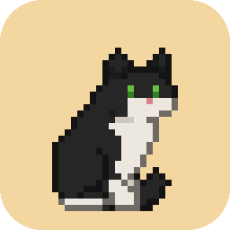

PISI
A little pixel cat that lives on your desktop and keeps you company while you focus.
What it does
- Focus with it. Start a focus block and PISI curls up beside you; a small pill shows the time left. Each finished block earns the cat a treat.
- Play on your breaks. Throw it a toy, wave a feather wand or shine a laser. It chases, pounces and gets tired.
- Its corner. A bed, a bowl and a toy basket by your taskbar, and a shop where the treats buy beds, toys and scratchers, each drawn to fit your cat. No money, no ads.
- Web pages. With its optional browser extension, it climbs onto the pages you read, knocks words off the page, pounces on what you select and watches your videos with you. Mark a site as distracting and it sits on it during a focus block. The extension only tells PISI where things are on the page, never what they say.
- Gentle reminders. A posture check or a glass of water as a break starts.
PISI runs on Windows, macOS and Linux. It's free and open source, has no account and no ads, and always will.
Google Calendar (optional)
If you connect Google Calendar, PISI can write your finished focus blocks, and the day plans you approve, to a calendar of its own named “PISI” in your Google account.
It asks Google for the narrowest calendar permission there is: to create its own calendar and manage the events on it. It can't see or change any of your other calendars. Everything goes straight between your computer and Google; there's no PISI server.
You can disconnect in PISI's Settings at any time, remove its access at myaccount.google.com/permissions, or delete the PISI calendar. Details are in the privacy policy.
Getting PISI
Download it for Windows, macOS or Linux from the latest release. PISI is open source; the code is on GitHub.